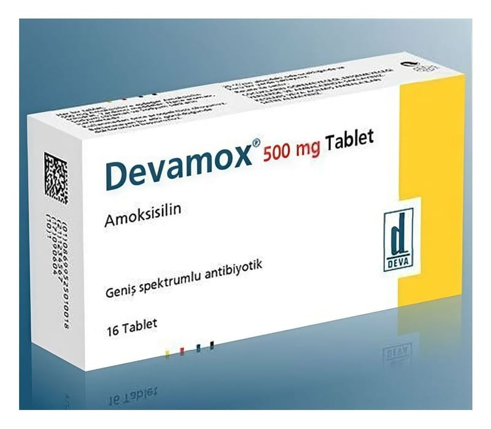

Devamox 500 mg Tablet, 16 Adet

Ne için kullanılır
KT · Bölüm 1DEVAMOX bakteri denilen mikroorganizmaların oluşturduğu hastalıklarda kullanılan bir antibiyotiktir. Amoksisilin, bakterilerin hücre duvarlarını bozarak ölümlerine neden olur.
DEVAMOX tablet 500 mg amoksisilin içerir ve beyaz, hemen hemen beyaz, hafif bombeli, bir yüzü “DMS-500” baskılı, diğer yüzü ortadan çentikli tablet görünümündedir. Her kutuda 16 tablet bulunur.
DEVAMOX, duyarlı bakterilerin neden olduğu aşağıdaki çeşitli enfeksiyon hastalıklarının tedavisinde kullanılmaktadır: Akut bakteriyel sinüzit (kafa kemiklerindeki boşluklarda bakterilere bağlı gelişen iltihap) Orta kulak iltihabıAkut streptokokkal bademcik iltihabı ve farenjit (bir bakterinin neden olduğu bademcik ve yutak iltihabı) Toplum kaynaklı zatürre İdrar kesesi iltihaplanması Gebelikte üriner sistem enfeksiyonları Böbrek enfeksiyonu Tifo ve tifo benzeri ateşler Selülit ile yayılan diş apsesi (diş ve dişeti ile ilgili enjeksiyonlar) Protez eklem enfeksiyonları (proteze bağlı eklem enfeksiyonları) Peptik (duodenal ve gastrik) ülser hastalığında Helicobacter pylori eradikasyonu (mide ülserinden sorumlu olduğu düşünülen bir mikroorganizmanın ortadan kaldırılması amaçlı tedavi) Kene, sivrisinek, at sineği, bit gibi kan emen canlıların yanı sıra kedi ve köpeklerden de bulaşan Lyme hastalığında kullanılabilir.